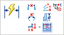
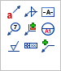
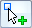
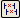
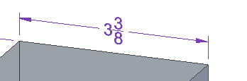
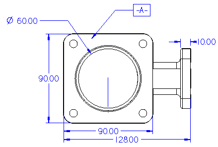

Add PMI dimensions and annotations
The assembly, part, or sheet metal model must be activated in an assembly.
-
(Set an active dimension plane) When you select a PMI dimension or annotation command, you can use the current dimension plane or redefine it. To redefine it, choose the Lock Plane command to Set a PMI Dimension and Annotation Plane.
Tip:You can set a different active plane at any time during the process of annotating the model.
-
(Annotate the 3D model or model view) Do any or all of the following:
-
Add model dimensions using any of the commands on the PMI tab→Dimension group on the ribbon.

-
Add model annotations using any of the commands on the PMI tab→Annotation group on the ribbon:

To select multiple reference elements when creating a PMI annotation, use the Referenced Geometry option

, which is available on the command bar for the PMI annotation commands. -
In the ordered environment, use the Copy to PMI command

to select and copy 2D dimensions and annotations from a sketch or profile-based feature to the 3D model. -
Use the Move Dimension command to adjust the positions of dimensions and annotations by moving them in a direction that is normal to the offset plane where they reside.
-
Use the Properties command on a selected PMI element shortcut menu to edit PMI text height, font, leader line, terminator, and other properties.
Example:You can apply fractional formatting to a linear dimension using the Units tab in the Dimension Properties dialog box.

To learn how to do this, see Format a fractional dimension.
-
Use the Edit Definition command on a selected PMI element shortcut menu to edit other options used to place it, including position, alignment, and text angle.
-
-
(Create a PMI model view of the annotated model) To create a PMI model view of the current model orientation, view settings, and PMI dimensions and annotations, choose the PMI tab→Model Views group→View command .
-
You can use the Keypoints option on the command bar to ensure only valid keypoints are selectable when you place a locked dimension to change the model. Choose the Center And Endpoints Only option from the list.
-
You can use the Midpoint option on the command bar when you must dimension a model using midpoints. Note that these midpoints are created with respect to the virtual endpoints of an edge, if applicable.
-
In the ordered environment, you can:
-
Use the Set Axis command if you want to place dimensions and annotations that are perpendicular to or parallel to an edge. You may want to use the new dimension axis, rather than the default axis, while you are placing dimensions with the Distance Between, Angle Between, Coordinate Dimension, and Symmetric Diameter commands.
-
Use the Dimension Axis option on the command bar to place dimensions and annotations at an angle. You may want to use the new dimension axis, rather than the default axis, while you are placing dimensions with the Distance Between, Angle Between, Coordinate Dimension, and Symmetric Diameter commands.
-
-
You can use the Lock Dimension Plane option on the command bar to change the active dimension and annotation plane from the default, implied plane of the model face.

How do I
Display and edit PMI elementsSelect multiple reference elements
Create PMI dimensions from the assembly level
Place a PMI dimension using an intersection point
Set a PMI dimension and annotation plane
Show custom occurrence properties in PMI
Move PMI elements in 3D
Reposition PMI text, lines, and arrows
Copy PMI elements from a sketch or feature
Add or remove PMI elements in a model view
Learn more
PMI dimensions and annotationsPMI edit handles and cursors
Placing PMI dimensions using intersection points
Look up more details
Lock Plane commandLock Dimension Plane command bar
Move Dimension command
Add To Model View command
Remove From Model View command